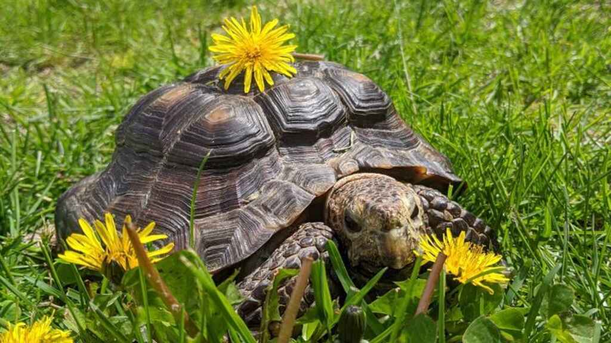

Zoó Aventura Salvaje
Trasladan a Yaracuy 108 animales del Zoológico del Zulia
Ministro de Ecosocialismo confirmó la movilización de las especies "para preservarlas",
aunque no dijo a dónde las transportaron. Diputado Eduardo Labrador mencionó el estado Yaracuy como
destino de los seres vivientes
Lo que se mantenía en secreto lo confirmó el ministro de Ecosocialismo, Heryck Rangel: trasladaron a
los animales del Parque Zoológico Metropolitano del Zulia, situado en la vía a La Cañada de
Urdaneta, en el municipio San Francisco.
Sin embargo, no menciona en ningún momento el lugar a donde fueron movilizadas, a principios de mes,
las especies que convivían en el antiguo Parque Sur, que cumplió 46 años el pasado 15 de junio.
Una nota de prensa del Ejecutivo del estado Zulia informa sobre la asignación de recursos económicos
para recuperar el parque zoológico.
El boletín de prensa habla de trabajos de limpieza y recuperación que se ejecutan en el recinto, y
al proyecto de reactivar los paseos en lanchas en las lagunas del lugar que cuenta con 90 hectáreas.
El diputado al Consejo Legislativo del Estado Zulia (CLEZ), Eduardo Labrador, aseguró que fueron 108
animales que llevaron hasta una empresa privada, en el estado Yaracuy.
Sra. Jennifer: la tortuga que perdió a su 'madre' en la pandemia y que tiene cola de adoptantes
La mascota llegó a un centro de adopción de EE.UU. después de que su dueña ingresara en
un hospital. Poco después la mujer murió.
No son pocas las mascotas que han perdido a sus dueños durante la actual pandemia de coronavirus.
Este es el caso de una tortuga de 53 años cuya cuidadora falleció la semana pasada a causa del
Covid-19 en Estados Unidos. En este país, al menos 96.000 personas han muerto por el nuevo
coronavirus.
Continuamos recibiendo animales que llegan a nosotros porque sus dueños murieron, o se pusieron
demasiado enfermos para cuidarlos, o se vieron tan afectados económicamente que ya no pueden cuidar
a sus mascotas", explica en un comunicado Victoria Odynsky, gerente del centro de adopción. En este
caso, la tortuga llegó al centro después de que su dueña fuera ingresada en un hospital. Poco
después la mujer falleció.
La dueña de Sra. Jennifer "adoraba" a la tortuga, de unos 2 kilos, aproximadamente del tamaño de un
plato grande, y le encantaba "presumir de ella delante con amigos y desconocidos". "Como hacemos con
cada animal a nuestro cargo, cuidaremos lo mejor posible a la Sra. Jennifer hasta que le encontremos
un hogar adoptivo adecuado", agrega Odynsky. Y, efectivamente, se lo han tomado en serio.
Antioquia demostró su amor y solidaridad con los animales
Más de 32 millones de pesos y nueve toneladas de concentrado se lograron recoger en la
primera jornada de la donaton #PorEllos.
La Gobernación de Antioquia confirmó que durante la primera jornada de la donaton #PorEllos,
realizada este sábado 30 de mayo, se logró la mitad de la meta. Más de 32 millones de pesos en
efectivo y nueve toneladas de concentrado fueron el balance al final del día.
Se trata de una iniciativa de la Gobernación, la alcaldía de Medellín y su Secretaría del Medio
Ambiente, la Personería y más de 25 entidades públicas y privadas.
La meta es poder seguir llevando alimentos a más de 20 mil animales en situación de calle que se
calcula existen en el departamento, por eso se busca, a través de la donatón #PorEllos, recolectar
al menos 50 toneladas de concentrado y dinero que permita seguir patrocinando la alimentación de
estos animales.
Durante todo el sábado centenares de personas se acercaron a los puntos de concentración con el fin
de hacer su aporte, así mismo, una caravana en compañía de autoridades, recorrió la ciudad
recolectando donaciones.
La Donatón #PorEllos avanza con una caravana que va por la ciudad recolectando donaciones. La meta
es conseguir 50 toneladas de alimento, aún puedes sumarte.
Un amor sin medidas: el león Júpiter volvió a besar a su cuidadora

Luego de un mes de estar en recuperación en Villa Lorena, el animal respondió a las
caricias de Ana Julia Torres.
Después de once meses en los que Júpiter, el león más querido por los colombianos, atravesara por un
grave estado de salud, su cuidadora Ana Julia Torres contó en redes sociales la alegría que sintió
luego de que el animal volviera a besarla e intentara abrazarla, aunque "todavía no tiene las
fuerzas", como ella lo indicó.
El animal ha venido recuperándose en el refugio Villa Lorena de la capital del Valle del Cauca,
lugar en el que desde hace 20 años conoció del gran amor y cuidado de Ana Julia.
"Hoy me besó como cinco veces. Hoy lo encontré erguido, divino", fueron las palabras de la
cuidadora, quien además agregó que estuvo con Júpiter por un buen tiempo, lo acarició, mimó y dijo
cuánto lo ama. Para su sorpresa, cuando ella le pidió un beso él le dio cinco.
Torres dijo que quería compartir esta alegría con los colombianos y darles su agradecimiento por
estar pendientes de Júpiter, pues se han llevado a cabo desde ‘velatones‘ hasta cadenas de oración
en el departamento por la recuperación del felino.
Lo último que se conoció sobre la salud del animal fue que el león Júpiter se encuentra en un estado
terminal por cuenta de un presunto cáncer que ha hecho metástasis en su hígado, según Carlos Eduardo
Calderón, director del Dagma. Sin embargo, Delio Orjuela, veterinario que preside la junta médica
del animal, aseguró que “vamos a hacer todo lo posible para salvarlo.
Las jirafas están en riesgo de desaparecer

Hoy cuando se celebra el Día Mundial de estos mamíferos, el llamado es a protegerlos,
pues su población está siendo amenazada no solo por la destrucción de su hábitat, sino de los
cambios ecológicos y las guerras civiles
Con el objetivo de dar a conocer la situación crítica de esta especie y trabajar en su conservación,
hoy se celebra el Día Mundial de la Jirafa, el mamífero más alto del mundo. La Fundación para la
Conservación de las Jirafas (GCF), hace un llamado para que se adopten medidas de protección que
eviten su desaparición, pues el número de ejemplares se ha venido reduciendo de forma importante en
las últimas décadas.
Desde hace un tiempo, los biólogos han venido advirtiendo que este animal cada vez está en mayor
riesgo de extinción. La pérdida de hábitat a causa de factores como la deforestación, el cambio de
uso del suelo, la expansión de actividades agrícolas y ganaderas y el crecimiento de la población
humana; así como los cambios ecológicos y la caza ilegal se han convertido en sus principales
amenazas.
Este último aspecto toma relevancia dado que las diferentes partes del cuerpo de las jirafas son muy
demandadas: la carne es utilizada como fuente de alimento, el pelo lo usan para fabricar pulseras e
hilo y la piel para hacer escudos, sandalias y ropa; mientras que los tendones son empleados para
cuerdas en instrumentos musicales.
Otro tema que ha impactado a esta población de mamíferos poniéndola en riesgo es la transmisión de
enfermedades por cuenta de la cercanía del ganado doméstico y el impacto de conflictos civiles están
aislando su población frenando el flujo genético reproductivo que les está llevando a su progresiva
desaparición y problemas endogámicos.
Datos de la Unión Internacional para la Conservación de la Naturaleza y la Fundación para la
Conservación de las Jirafas, estiman que la población actual de las miamas en toda África, el país
donde hay un mayor número de estos mamíferos, es de aproximadamente 100.000 individuos.
Ante este panorama, hay países como Estados Unidos que han comenzado a dar pasos con el fin de
lograr su protección. En el caso de la nación norteamericana lo hace bajo la Ley de Especies en
Peligro de Extinción. El Servicio Federal de Pesca y Vida Silvestre de este país dio a conocer un
informe preliminar en el que indica que hay información sustancial que justifica poner a estos
mamíferos en la lista que busca evitar su desaparición.


Todos los derechos reservados
Maracaibo Venezuela 2020